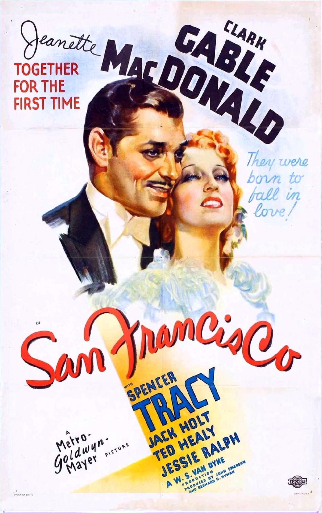

San Francisco
9th Academy Awards
(Oscars 1937)
6 Nominations, 1 Award
| Nominations | ||
|---|---|---|
| Category | Nominees | Result |
| Outstanding Production | Metro-Goldwyn-Mayer | Nominated |
| Actor | Spencer Tracy | Nominated |
| Directing | W. S. Van Dyke | Nominated |
| Assistant Director | Joseph Newman | Nominated |
| Writing (Original Story) | Robert Hopkins | Nominated |
| Sound Recording | Douglas Shearer | Won |